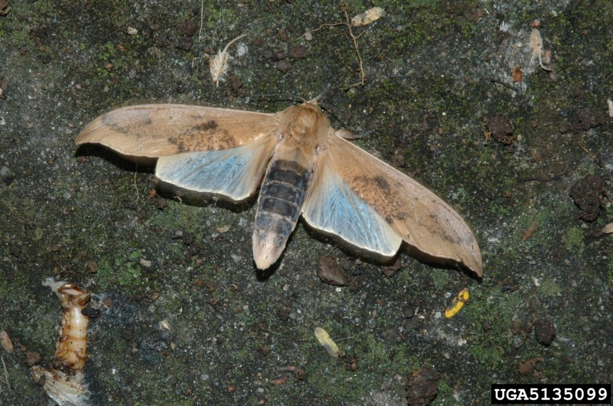

As I have repeatedly stressed, our universe is one of many other universes. This universe houses our “reality”, which in all actuality means that our universe can well be called the “reality universe”.
It is a complex stew of all sorts of things, many, many of which we humans are unable to see and perceive with our senses.
This includes the “physical world-lines” that we inhabit and non-physical environments associated with those world-lines. Plus all that other “stuff” that is all part of the universe as a whole. It includes such things as “time”, and “the past”, and “the future”. It includes all sorts of things from spirits, to sprites, and ghosts to smelly feet and extraterrestrials.
Here we discuss some ways or techniques that you can use to alter the way you can see the reality that you are in. In this post we will look at some drugs that alter the way that the brain senses things and interprets them, as well as some “illnesses” or “ailments” that enable humans to observe the unseen worlds around us.
The techniques discussed are;
- Charles Bonnet Syndrome
- The Capgras Syndrome
- The bicho de tacuara
- DMT (N,N-Dimethyltryptamine)
There are other techniques and means as well, but for now, we will concentrate on these three elements of concern.
Charles Bonnet Syndrome
"People afflicted with certain eye diseases give similar reports of beings from parallel universes."
People afflicted with Charles Bonnet Syndrome see beings from another world. Many scientists would call these beings hallucinations. Others call this syndrome a portal to a parallel reality.
I like to think of it as an alteration of the mind that permits a wider range of “vision” into the normally unobserved elements within our reality.
People with Charles Bonnet Syndrome (or “Bonnet-people”) are otherwise mentally sound.
The beings appear when the Bonnet-people’s vision deteriorates as a result of eye diseases such as age-related macular degeneration — or when patients have had both eyes removed. Charles Bonnet Syndrome is more common in older people with a high level of education.
When eyesight deteriorates, the brain compensates. It gathers information from a multitude of inputs from the other senses (touch, smell, feeling, etc.) and interpets the inputs visually as if the eyes were normal.
Bonnet-people report that they see apparitions resembling distorted faces, costumed figures, ghosts, and little people.
Most Bonnet-people see beings wearing hats.
For example, one very sane woman was sitting quietly at home when she suddenly saw several two-inch-high, stovepipe-hat-wearing chimney sweeps parading in front of her. (ref 2.) She tried to catch one, but could not. Her only medical problem was that she had poor sight due to macular degeneration.
One patient described how a friend working in front of a tall privacy hedge suddenly disappeared, as if he had suddenly put on a cloak of invisibility.
"There was an orange peaked cap bobbing around in front of the hedge and floating in space by its own devices." (ref. 1)
Fifty percent of Bonnet-people see a disembodied or distorted face of a stranger with staring eyes and prominent teeth. Sometimes the strangers are seen only in an outline or cartoon-type form, which reminds me of the images seen by people taking the psychedelic drug DMT. The faces are often described as…
"being grotesque, or like gargoyles". (ref. 1)
Some of the beings have blank eye sockets.
(This image is also reported by people using the hallucinogen Special K. One person stated that while under the influence, everything was normal except that people in the room had no eye sockets, just a black void, and he saw light being sucked into the void from around the periphery of the eyeballs.)
Bonnet-people also see serene landscapes and vortices.
Many Bonnet-people will see entire new worlds, such as landscapes or groups of people, which are either life size or tiny (ref 3.)
Perhaps when vision deteriorates, the brain’s visual cortex is starved for information, and the brain is free to access parallel realities.
Sometimes the imagery can be complex, almost comical, like two miniature policemen guiding a midget villain to a tiny prison van, ghostly (translucent figures floating in the hallway), people wearing one big flower on their heads), as well as beautiful (a shining angel, wonderful group of flowers). (ref 4.)
A Swiss philosopher named Charles Bonnet first described this condition in the 1760 when he noticed his grandfather, who was blinded by cataracts, describing birds and buildings that Bonnet could not see. (ref. 3)
Further Reading on Charles Bonnet Syndrome
1. Roger Highfield, “Ghosts and witches on the brain”
2. Dr Stephen J Doyle and Maggie Harrison, “Lost in Lilliput”
3. Royal National Institute of the Blind on Bonnet Syndrome
4. Robert J Teunisse, Johan R Cruysberg, Willibrord H Hoefnagels, André L Verbeek, Frans G Zitman, “Visual hallucinations in psychologically normal people: Charles Bonnet’s syndrome”
The Capgras Syndrome
"People with Capgras Syndrome act as if they are in a parallel universe in which the people they know are "doubles" or "impostors." - Sex, Drugs, Einstein, and Elves.
When people with Capgras Syndrome see a friend, spouse, or themselves in a mirror, they believe they are seeing an exact double or an impostor.
Sometimes, people with Capgras Syndrome even believe that inanimate objects — like a chair, watch, book, or lamp — have been replaced by exact replicas. If people own a pet, the pet may be seen as an impostor, a strange animal roaming through their lives and homes.
Capgras patients are often so disturbed when they see a doppelganger in the mirror that they remove all mirrors from the home. The syndrome, named for French psychiatrist Jean Marie Joseph Capgras, afflicts thousands of people in the United States.
Some people with Capgras Syndrome have epilepsy or strange-looking temporal lobes in the brain.
The Capgras’ patient identifies his or her spouse as being an imposter – identical in every possible way, but an identical replica. The patient will accept living with these imposters but will secretly “know” that they are not the people they claim to be.
This reminds me of the movie “Invasion of The Body Snatchers”.
I view this syndrone as an interesting "pointer" to the idea that what the brain interperts the reality as can alter our perception of it. It can do so to the point where it no longer "feels" correct, even though all the other senses are telling it to believe what it sees. This syndrome is important as it points to the mechanism that the brain uses to distinguish between actual consciousness-inhabited beings and "quantum shadows" of beings within a world-line event.
A Hallucinogen of Insect Origin
Submitted by E.B. Britton. Deakin, Canberra ACT 2600 (Australia)
Let’s take a moment to consider the existence of a hallucinogen, unique in that its
source is an insect.
Augustin de Saint-Hilaire (1779-1853) traveled extensively in eastern
Brazil between 1816 and 1823. After his return to France, published
valuable observations on the geography, ethnology and natural history of the
country.
In two of his unpublished works Saint-Hilaire (1824, republished
Jenkins, 1946, p. 49; 1830, pp. 432-433) described the use of an insect as
food and medicine by the Malalis. THe Malalis are natives in the Brazilian province of Minas Gerais in Brazil.
The relevant passage (1824) (translated) is as follows:
When I was among the Malalis, in the province of Mines, they spoke much of a grub which they regarded as a delicious food, and which is called bicho de tacuara (bamboo-worm), because it is found in the stems of bamboos, but only when these bear flowers. Some Portugese who have lived among the Indians value these worms no less than the natives themselves; they melt them on the fire, forming them into an oily mass, and so preserve them for use in the preparation of food. The Malalis consider the head of the bicho de tacuara as a dangerous poison; but all agree in saying that this creature, dried and reduced to powder constitutes a powerful vulnerary (for the healing of wounds). If one is to believe these Indians and the Portugese themselves it is not only for this use that the former preserve the bicho de tacuara . When strong emotion makes them sleepless, they swallow, they say, one of these worms dried, without the head but with the intestinal tube; and then they fall into a kind of ecstatic sleep, which often lasts more than a day, and similar to that experienced by the Orientals when they take opium in excess. They tell, on awakening, of marvellous dreams; they saw splendid forests, they ate delicious fruits, they killed without difficulty the most choice game; but these Malalis add that they take care to indulge only rarely in this debilitating kind of pleasure. I saw them only with the bicho de tacuara dried and without heads; but during a botanical trip that I made to Saint-Francois with my Botocudo, this young man found a great many of these grubs in flowering bamboos, and set about eating them in my presence. He broke open the creature and carefully removed the head and intestinal tube, and sucked out the soft whitish substance which remained in the skin. In spite of my repugnance, I followed the example of the young savage, and found, in this strange food, an extremely agreeable flavour which recalled that of the most delicate cream. If then, as I can hardly doubt, the account of the Malalis is true, the narcotic property of the bicho de tacuara resides solely in the intestinal tube, since the surrounding fat produces no ill effect. Be that as it may, I submitted to M. Latreille the description of the animal I had made, and this learned entomologist recognised it as a caterpillar probably belonging to the genus 'Cossus' or to the genus 'Hepiale'.
These observations are repeated in Saint-Hilaire (1839, pp. 432-433) with
the addition of the information that the “bicho de taquara” are half as long
as the index finger.
The intoxicating effect of the larvae from bamboo has apparently been
forgotten in Brazil and the seven volume Handbook of South American
Indians (Steward, 1946-1959) while referring briefly to the observation of
Saint-Hilaire in Vol. 5 (p. 557) gives no additional references.
This is perhaps not surprising as the Malalis were a near-coastal tribe long ago overrun by the advance of civilization. The name “bicho de taquara” is, however, still in use and according to Ihering (1932, p. 236) and Costa Lima (1936, p. 266;
1967, p. 246) refers to the larva of the moth Myelobia (Morpheis) smerintha
Huebner (Lepidoptera: Pyralidae : Crambinae).
Costa Lima (1967, p. 246) states that the larvae feed in common bamboos
including Nastes (=Nastus) barbatus Trin., “taquara lixa” (Merostachys
Rideliana Rupr.), “taquara poca” (Merostachys Neesii Rupr.) and “taquaras-
su” (Guadua sp.) (Hoehne, F.C. et al.).
The larvae feed inside the internodes of the bamboo and attain a maximum length of about 10 cm. The moth emerges in September and has frequently appeared in plague proportions.
There are 24 species of Myelobia in South America, one in Mexico and one
in Guatemala.

The statement by Saint-Hilaire that the larvae are only found when the bamboo is in flower probably means that the host bamboos flower annually (as do a number of Brazilian species) and it is at that time that the larvae reach their maximum size. As the adult moth emerges in September this is probably in July or August.
It appears from the observations of Saint-Hilaire that the active substance
is not destroyed by drying, and the need to remove the head and gut to
avoid intoxication suggests that it is contained in the salivary glands. The
active material could therefore be concentrated initially by removing the
head plus salivary glands and part of the gut, discarding the rest of the body.
In view of the interest in the pharmacology of hallucinogens and the
medicinal use of the dried and powdered larvae it would seem to be woth-
while to investigate what appears to be a new source, and as the insect is
large and common it would be well suited to biochemical study. It is of
particular interest that this would be the first hallucinogen of insect origin.
Interesting, because…
"They tell, on awakening, of marvellous dreams; they saw splendid forests, they ate delicious fruits, they killed without difficulty the most choice game."
References
- Costa Lima, A.M. da (1936) Terceir Catalogo do Insetos qui vivem nas plantas da Brasil, Directoria de Estatistica da Producao, Rio de Janeiro.
- Costa Lima, A.M. da (1967) Quarto catalogo dos insetos qui vivem nas plantos de Brasil; seus parasitos e predatores. Rio de Janeiro, Ministerio de Agricultura, Departamento de Defesa e Inspecas Agropecuaria, Servico de Defesa Sanitaria Vegetal, Laboratorio Centralde Patolgia Vegetal.
- Ihering, R. von (1917) Observacoes sobre a mariposa Myelobia smerintha Hubn. em S. Paulo. Physis (Buenos Aires) 3, 60-68.
- Ihering, R. von (1968) Diccionario dos Animaes do Brasil, Sao Paulo, Editora Universidade Brasilia, pp. 147-148.
- Jenkins, Anna (Ed.) (1946) Chronica Botanica 10, 24-61 (a reprint of Saint-Hilaire, 1824).
- Saint-Hilaire, Augustin F.C.P. de (1824) Histoire du Plantes les plus remarquables duBresil et du Paraguay.
- Saint-Hilaire, Augustin F.C.P. de (1830) Voyages dans l’interieur du Bresil – Premiere Partie. Voyage dans les provinces de Rio de Janiero et de Minas Gerais, Paris.
- Steward, Julian H. (Ed.) (1946-1959) Handbook of South American Indians, 7 Vols. Vol. 5. The Comparitive Ethnology of South American Indians Prepared in cooperation with the U.S. Dept. of State as a project of the Interdepartmental Committe on Scientific and Cultural Cooperation. U.S. Govt. Printing Office, Washington.
DMT
There are many, many articles on the use of DMT to glimpse past the veil and observe the reality that surrounds us. For if properly ingested, you can actually observe the Mantids doing their things to assist in the development of the human species.
- Documented DMT Experiences — DMT Times
- The DMT Experience: The Good, the Bad, and the Unbelievable
- DMT drug study investigates the ‘entities’ people meet …
- Can’t Remember My Experiences – DMT Discussion – …
- DMT Trip: The Experience and Effects of the Most Powerful …
- Near-Death Experiences and DMT | Psychology Today
- How to Have the Best DMT Experience: 5 Necessary Steps To .
- 10 Mind-Blowing Experiences Shared by People Who Took …
- A DMT trip ‘feels like dying’ – and scientists now agree ..
- What Is DMT? Everything You Need to Know
- Programmed Communication During Experiences with DMT …
- The DMT Drug is not a Drug, It’s Much Stranger
- DMT- My experiences and entity encounters – The …
- DMT Trip: The Experience and Effects of the Most Powerful …
- DMT – Erowid Exp – ‘Alien Head Surgery’
- DMT – Erowid Exp – ‘Going Home and Coming Back’
- Personal Story: My 5-MeO-DMT Experience – Reset.me
- Dmt, does it simulate death and what are your dmt experiences?
- Descriptions of the DMT Experience
- 4-AcO-DMT Guide – Experience, Benefits, & Side Effects …
- DICK KHAN – DMT RESEARCHER – DMT My Occult Mind …
- DMT Trip: What to Expect – The Third Wave
- DMT: Gateway to Reality, Fantasy or What? | Psychology Today
- The Super Secret Hidden DMT Extraction Guide | The …
- Study investigates ‘entities’ seen while using DMT – Big Think
"DMT in the pineal glands of Biblical prophets gave God to humanity and let ordinary humans perceive parallel universes."
The molecule DMT (N,N-Dimethyltryptamine) is a psychoactive chemical that causes intense visions and can induce its users to quickly enter a completely different “environment” that some have likened to an alien or parallel universe.
The transition from “our” world to “theirs” occurs with no cessation of consciousness or quality of awareness.
What is actually going on is that the veil of what our actual reality is has been lifted and our senses and our brain can now, if only briefly, observe the universe and reality as it really is. And since it is so different from “our” day-to-day universe, many people consider it as entering a “new” universe.
In this environment, beings often appear who interact with the person who is using DMT. The beings appear to inhabit this parallel realm.
These beings are Mantids.
They are an old species that evoled upon the earth millions of years ago and advanced to become a multi-dimensional species. They work with humans to improve our sentience, assist in the evolution and growth of our soul, and manage the world-line transitions.
The DMT experience has the feel of reality in terms of detail and potential for exploration. The Mantids encountered are often identified as being alien-like or elf-like.
Some of the creatures appear to be three-dimensional. Others appear to lack depth.
Author Terence McKenna has used DMT and feels that…
"Right here and now, one quanta away, there is raging a universe of active intelligence that is transhuman, hyperdimensional, and extremely alien... What is driving religious feeling today is a wish for contact with this other universe." The aliens seen while using DMT present themselves "with information that is not drawn from the personal history of the individual."
DMT is also naturally produced in small quantities in the human brain, and it has been hypothesized that DMT is produced in the pineal gland in the brain.
Is it possible that the reality exposed to humans by injecting DMT is in some sense a valid reality, on par with our normal reality? -Reality Carnival
Our minds, which evolved to help us run from lions on the African savannas, is not engineered to see these other realities under normal circumstances.
What is the guarantee that our minds are naturally designed to sense the “true reality”?
Perhaps there is no guarantee.
Consider a far-fetched example. Imagine a creature or phenomena that has been lurking among us since the dawn of evolution. If our ancient ancestors died every time they perceived the phenomena, evolution would favor creatures who did not perceive the creatures or phenomena. One might counter this argument by saying that our modern instruments, such as X-ray machines and cameras, should be able to make the creatures apparent to us, even if our unaided sensorium is not up to the task. Reasoning further, because our instruments have not made these realms apparent to us, the realms must not be real. However, perhaps our traditional instruments and theories are also not up to the task. Or perhaps our interpretation of the instruments' results is incomplete. Perhaps DMT is an instrument. - Reality Carnival
As a metaphor, consider infrared goggles. A person leans on a tree. At night, we don’t see the person. Put the goggles on, and a new reality results — a truer reality — and we see the man.
Similarly, is it possible that our brain is a filter, and the use of DMT is like slipping on infrared goggles, allowing us to perceive a valid reality that is inches away and all around us?
Is it possible that that some of our human ancestors produced more DMT than we do today? For example, many of the ancient Bible stories describe prophets with DMT-like experiences.
These sorts of ecstatic singing and repetitive exaltations remind me of subjects who took DMT and heard:
"Now do you see? Now do you see?" along with singing voices. -These cases are described in Rick Strassman's book DMT: The Spirit Molecule.
Maybe this is why the ancients seemed so in touch with God and with miracles and visions. Maybe Moses and Jesus had a greater rate of pineal DMT production than most.
One way to imagine how other realities could exist side by side with our own is to consider the forces that produced the diversity of senses and intelligences right here on Earth.
In a real way, there are already alien worlds right here among us.
Every Earthly creature perceives the world in an “alien” way. Dogs. Bees. Bats. Cats. They experience the world with different kinds of senses. They can smell what we cannot, they can see what we cannot, they can hear what we cannot.
If the organisms of the Earth were somehow able to describe their world to you, it would probably not be recognizable to you.
It would seem like the wildest world from any science-fiction story.
Moreover, if you were able to describe the world to another species, they would “see” no resemblance to their own. Our sense of reality would be different; our way of thinking would be different, and even the practical technology we would produce would be different.
We do not have to contemplate aliens or science fiction to imagine alien-like senses and bodies. The animal world of Earth is so diverse and full of different senses, that creatures are already walking among us possessing “alien” awareness beyond our understanding.
By studying the creatures of the Earth, we can hypothesize on the diversity of realities here on Earth.
Aliens would no doubt see a different world than we do.
To best understand this, consider the Indian luna moth, which has a wingspread of about 10 cm (4 inches). To our eyes, both the male and female moths are light green and indistinguishable from each other. But the luna moths themselves perceive in the ultraviolet range of light, and to them the female looks quite different from the male.
Other creatures have a hard time seeing the moths when they rest on green leaves, but luna moths are not camouflaged to one another since they see each other as brilliantly colored.
Other reading…
- “People with Charles Bonnet Syndrome See Beings from Parallel Universes”
- “DMT Users See Insect Gods”.
- “Man Discovers Intelligent Beings After Consuming DMT,“
- “The fleeting reality of DMT machine elves,”
- “Psychedelics, Abortion, and the Chrysanthemum.”
Please kindly keep in mind, I do not advocate or suggest that readers break any laws or try these drugs.
Conclusion
There is an entire subculture of people who use drugs and other means to “expand their consciousness”. In truth what they are doing is altering how their brain interprets the sensory inputs it receives.
Some do this for recreation. Some do this for spiritual awakening, and others do it for exploration purposes.
The truth is that our human biological bodies are not constructed to observe the universe as it actually is. It observes it as was determined by evolutionary factors.
We can observe the actual reality, and see all sorts of strange things, strange and unusual perceptions and odd “feelings” when we alter our brain through certain drugs, a change in our physical body, or through “enhancements” or alterations to our brain.
Rather than scoff at people who have had these “visions” outside of the normal, we should listen to them. Take notes, and move on in our own life. Well aware that perhaps, just perhaps, NOT being able to see the world as it actually is…
…is really a good thing…
… for now.